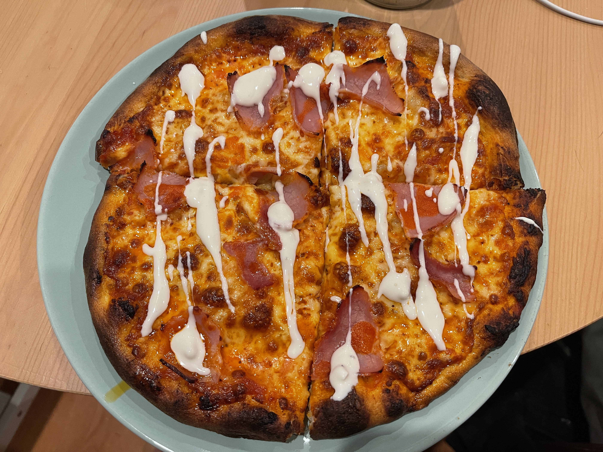

Ed's Pizza Recipe

One of my pizzas!
Ingredients
Dough
- 600 grams tipo 00 flour (can replace with bread flour)
- 378 grams warm water
- 6 grams salt (or to taste)
- 6 grams dry active yeast
- 5 grams sugar
- Olive oil
Sauce
- 1 can of crushed tomatoes
- A bunch of basil (seriously, usually a whole plant's worth)
- 3 cloves garlic (or more, to taste
- 10 grams sugar (or more, to taste depending on how sweet you like your sauce)
- 8 grams salt
Toppings
- Low moisture mozzarella cheese (can replace with sliced deli mozzarella cheese or string cheese, just no pre-shredded cheese)
- Any other solid toppings! I like pepperoni and/or ham, but anything else works. Except pineapple. No pineapple.
NO PINEAPPLE.
- Any sauce toppings! I'm a fan of buffalo & blue cheese (as pictured above)
Steps
- Mix yeast, sugar, and water. Stir, cover, and let sit for ~10 minutes or until yeast is bloomed (you'll see foam)
- Mix flour and salt
- Once yeast has bloomed, mix liquids with solids in a large bowl (or in your Kitchenaid bowl if you have that)
- If you have a Kitchenaid mixer, use dough hook at a high speed for 5-10 minutes, if mixing by hand, good luck! Mix until solid and wet, then plop it down on a table and start kneading.
Should take you about 10-15 minutes if you're good. Final result should be a sticky, slightly wet ball reminiscent of slime.
- Coat a large bowl in olive oil, not too much. Ball up your dough and place it in the bowl, roll the dough around so it's covered in olive oil, then cover the bowl tightly with plastic wrap. Let rest.
If you're going to use it on the same day, you can leave it out at room temperature as long as your space isn't too hot, humid, or dry. If resting for some days (recommended) place in fridge. a 2-4 day pizza dough is gold.
- For the sauce, mix the crushed tomatoes with the basil, salt, sugar, and garlic. Let rest for a few hours, at least 4 so flavors combine
- When ready, turn on oven to 500 (or hottest you can get it) and place a pizza stone, cast iron pan, or baking sheet (whatever you are cooking the pizza in) in the oven to heat up, take out your dough
and cut out the amount you want to use. A 150g piece of dough usually is enough for a small personal sized pie, mess around with this amount so you're satisfied!
- Roll the cut off piece of dough into a ball, make sure seams are smooth. dust with flour, cover, and let rest at room temperature for about 20-30 minutes
- When rested, dough should be very soft and malleable. Start by pressing down on the dough to flatten it. Press it down 1-3 times, rotate it a bit, and repeat. It should start to flatten in the form of a circle
- Once the dough stops flattening (it should start springing back), you can pick up the dough and start using gravity to stretch. This is a tricky motion that involves
resting the edge of the dough around your knuckles. Honestly, it's best if you look up this motion on Youtube or something, it's hard to describe by text.
- Your pizza should be evenly stretched if you did the previous step right, and should remotely resemble a circle. If you're new at this, don't worry, shaping gets
better with time, but the taste is not affected by the shape, so you still have a great pizza in the oven (or almost in the oven)
- By the way, if you have solid cheese, you might want to start cutting or shredding what you'll be using now, before the next step
- If you have a pizza stone and peel, prep your peel by dusting. I like semolina flour for this as it slides best and helps the crust texture. Regular flour stays floury/dusty. If using a baking sheet,
you might want to use the back of the sheet unless you're making a grandma pizza in which case you shouldn't have been following my stretching instruction above and instead should just manually stretch the pizza to
fit the inside of the sheet. If using a cast iron, the back of it will function just about the same as a pizza stone but you have less space to use a peel with, so you might want to CAREFULLY place your
dough on it by hand
- If using a peel, you need to do this fast: take a nice spoonful of sauce and spread it around in a circle/spiral. Try to not use too much sauce. Sprinkle and spread your cheese around. Add your toppings which should
NOT include pineapple. If using any other cooking medium, no need to rush too much but it's still good practice to be fast
- Cook your pizza for ~10 minutes if at 500. More heat means less time (If you can get to 800, then you might only need to do about 2 minutes, for example)
- Enjoy your amazing homemade pizza! I like this better than any pizza delivery joint, and I live in New York so that's saying something!